OVERLANDING
How to live an adventure life Join usWhat is overland?
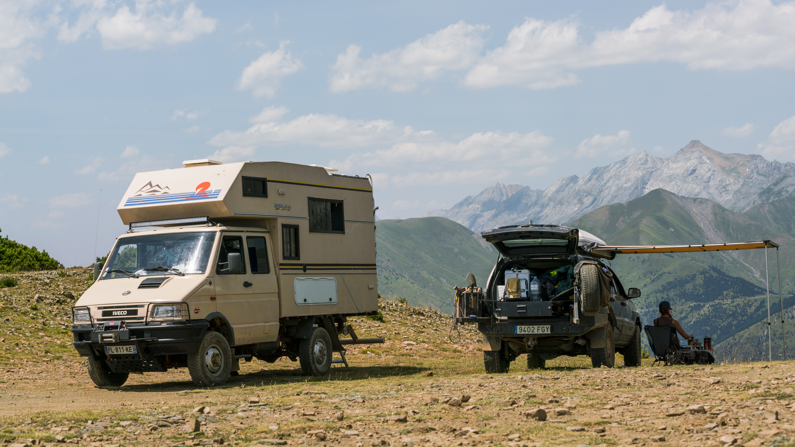Overlanding is self-reliant overland travel to remote destinations where the journey is the principal goal.
Typically, but not exclusively, it is accomplished with mechanized off-road-capable transport (from bicycles to trucks) where the principal form of lodging is camping, often lasting for extended lengths of time (months to years) and spanning international boundaries.
Historically, "overlanding" is an Australian term to denote the droving of livestock over very long distances to open up new country or to take livestock to market far from grazing grounds.
In the 1900s Alfred Canning opened up the Canning Stock Route. In Australia overlanding was inspired to a large degree by Len Beadell who constructed many of the roads that opened up the Australian Outback to colonizers. Those roads are still used today by Australian overlanders.
How to start?

For starters, your mindset is far more important than your gear and equipment.
Make no mistake: overlanding is hard work, and you’re often faced with extreme temperatures and all-manner of Mother Nature’s curious critters. But, for overlanding enthusiasts, that’s the entire point.
U-joints shear, tires rupture, and paint gets scratched—you’re the one that has to deal with it. You can go days without a shower, and your evening meals might consist of black coffee and whatever you could fish out of the nearest river.
To get started you just need to have the desire and some time to get out in the bush. It doesn't matter if it's with a 4x4 or with a bicycle and a sleeping bag.
Gallery
 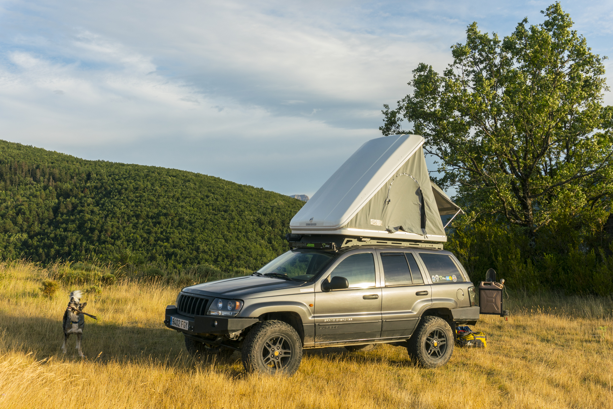
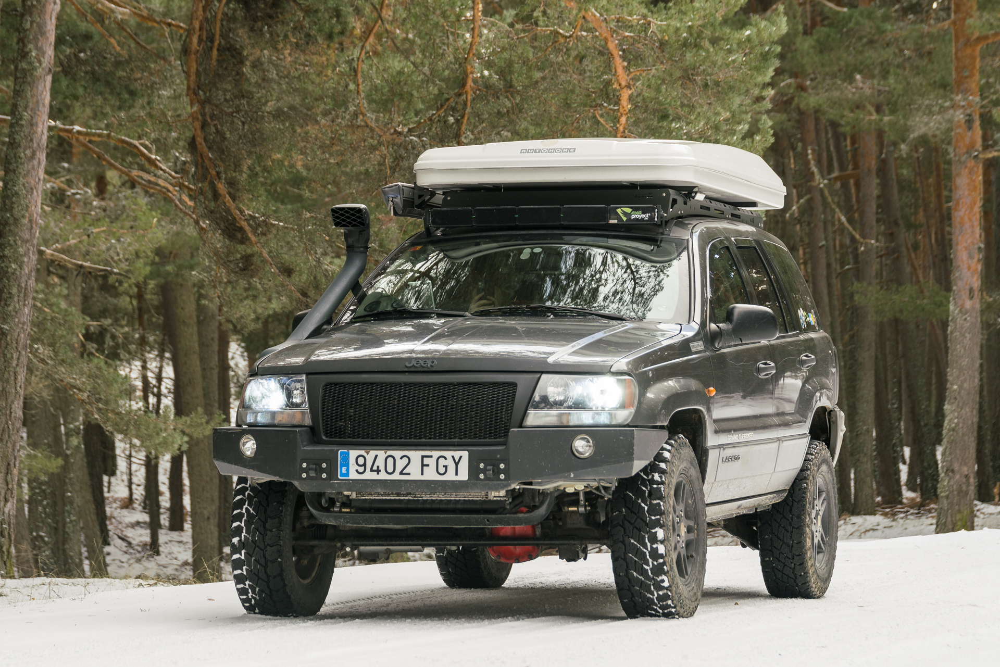
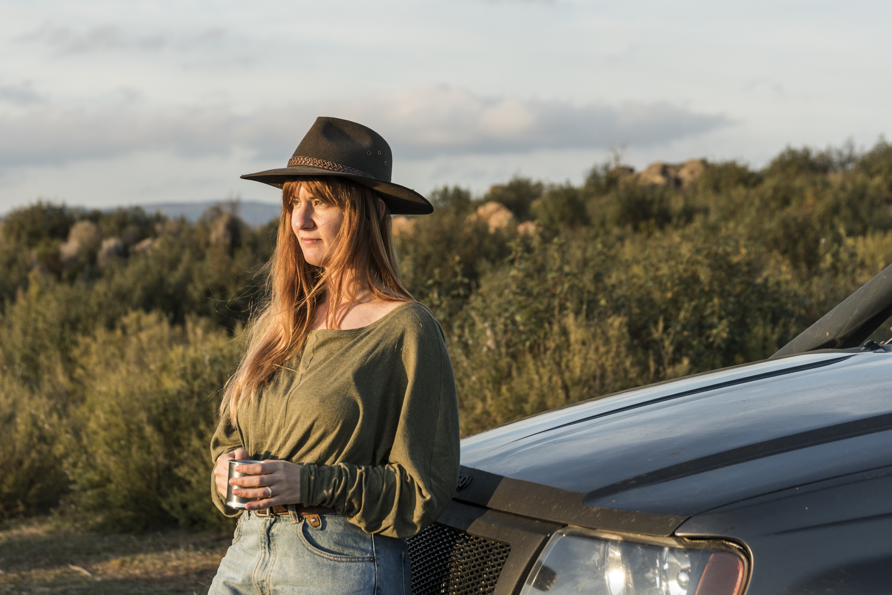
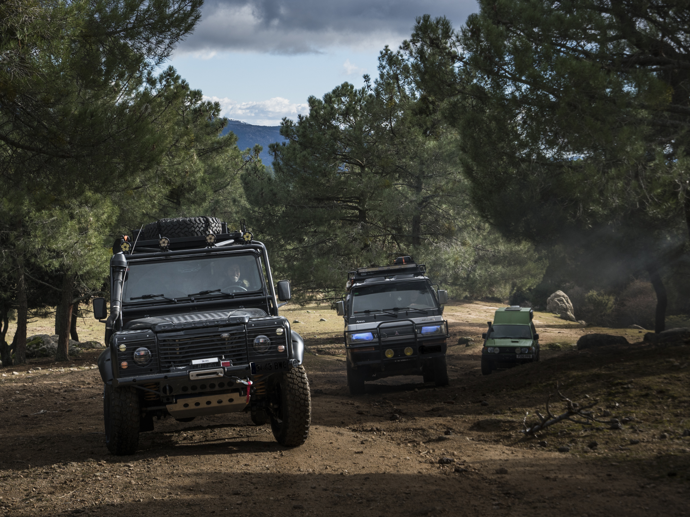
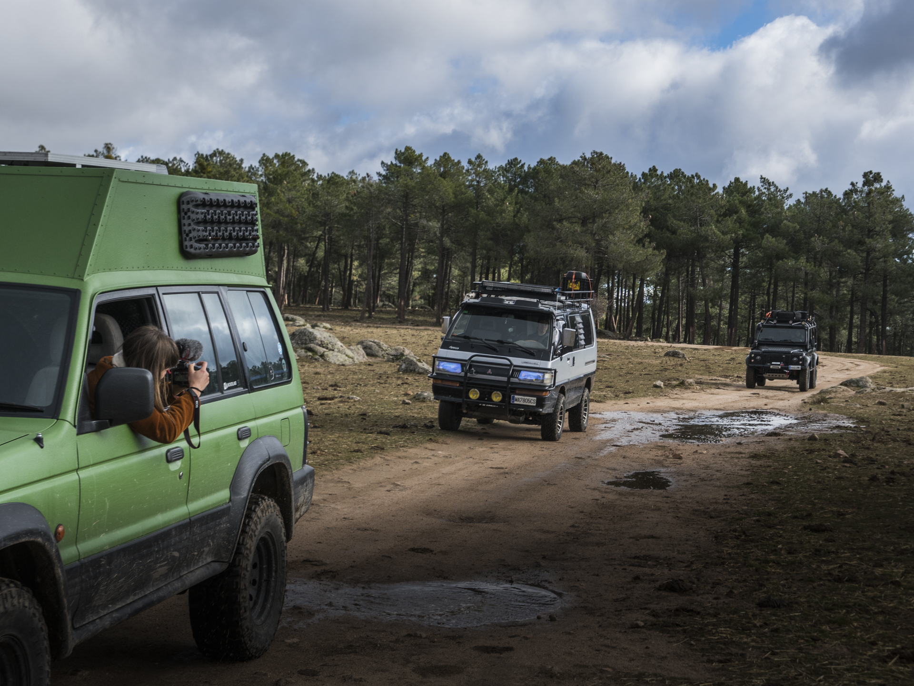
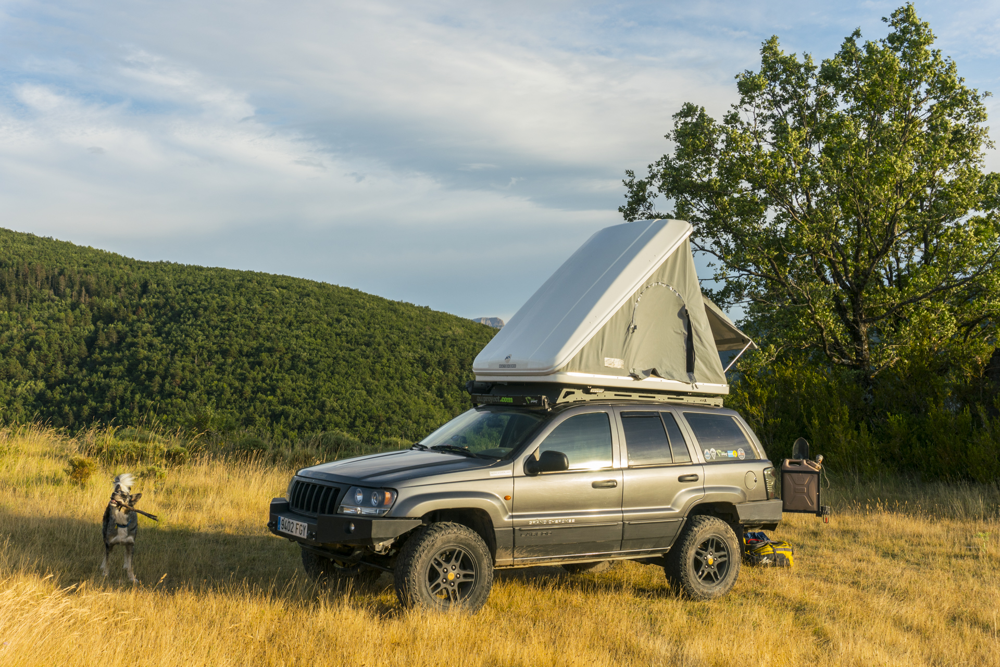
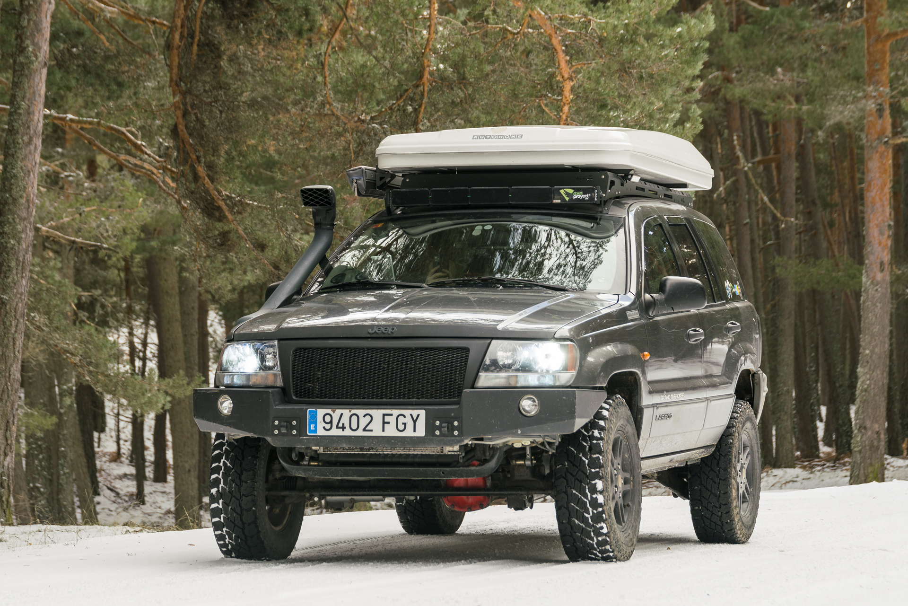
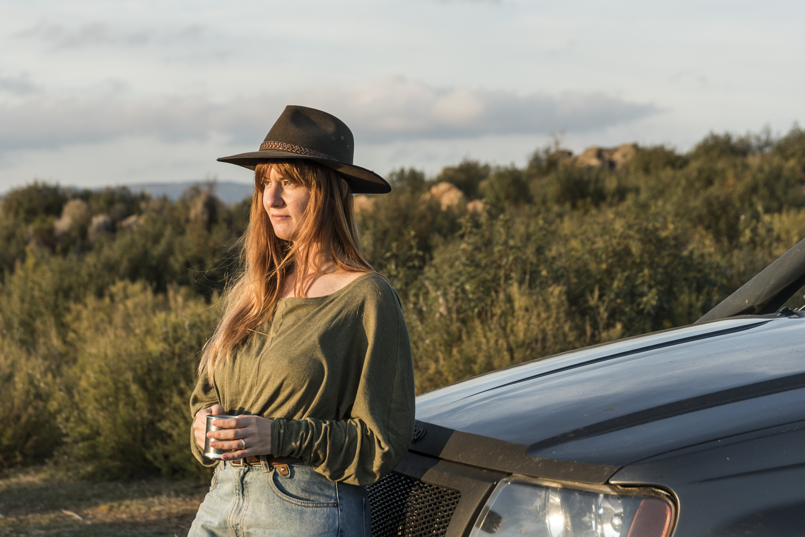
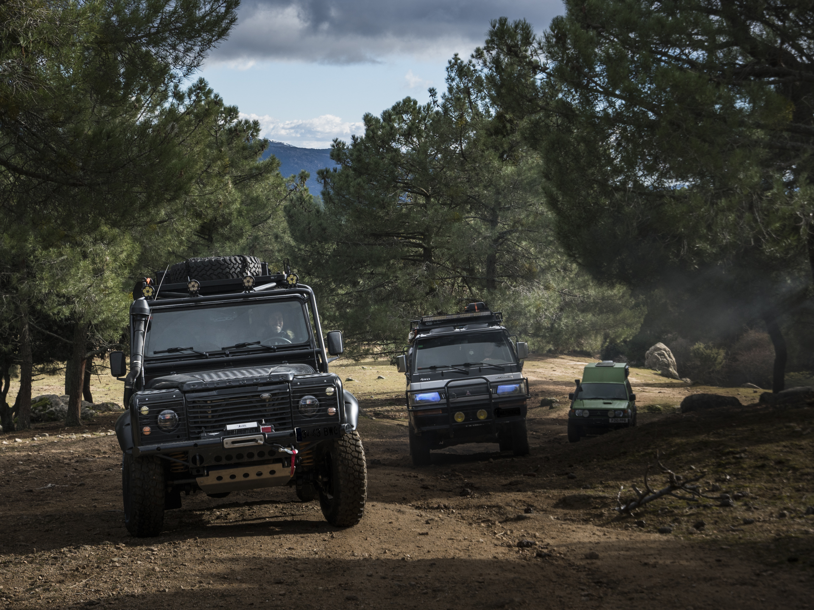
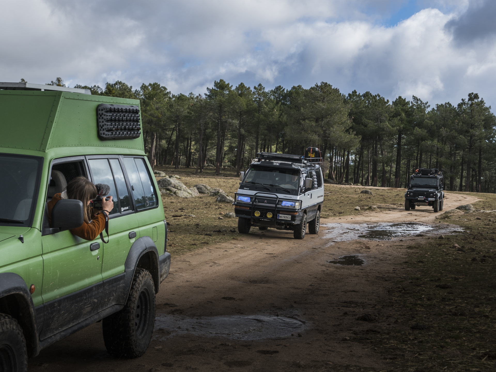